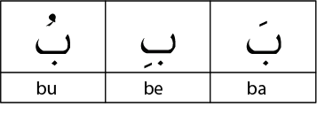

There are three short vowel signs that are known in Arabic as “Harakaat”, which literally means ‘motions’.
The short vowel marks enable the letter to produce a sound in a manner similar to the vowels (a, e, i, o, u)
in the English language.
The three short vowels (Harakaat) are Fathah, Kasrah, and Dammah.
1. Fathah: The Fatḥah is a small line placed above a letter, which enables the letter to produce
a short “a” sound, (like the “a” sound in the beginning of the word “up”). For example, the letter
ج “Jeem” when Fatha is placed on it. it produces “a” sound and ج becomes جَ “Ja”.
2.Kasrah: The Kasrah is a small line (same as Fatha) placed below a letter, which enables the letter
to produce a short “e”, (like the “e” sound in the word “be”). For example, the letter ج “Jeem” when
a Kasrah is placed on it, it produces a short “e” sound and Jeem ج becomes جِ “Je”.
3.Dammah: The ḍammah is a small curl-shaped sign placed above a letter, which enables the letter to produce a short “u” (like the “u” sound in the word “put”). For example, the letter
ج “Jeem” when a Dammah is placed on it. it produces a short “u” sound and Jeem ج becomes جُ “Ju” etc.
Note: when any hαrαkαh (short vowel) comes upon a letter, makes the letter Mutαhαrrik. Mutαhαrrik refers to the condition of a letter while having a Hαrαkαh (movement sign). in the
above examples “جَ” is Mutαhαrrik because of the hαrαkαh (short vowel/ Movement mark) on it.
An Alif (ا) is always empty of any Harakah, therefore an Alif with a Harakah is known as Hamzah
(and not Alif)

Sukoon
The "Sukoon" is a small circle over the letter. It is put over a letter when no sound
should be pronounced after the letter.
A letter with a sukoon is called sakinah
A letter with a sukoon means that it will be connected with the letter before it.
Long vowels
The long vowels are :
waw maddah i.e. waw sakinah with dhamma before it -
yaa maddah i.e yaa sakinah with kasrah before it
alif- is always a lond vowel when there is no hamza or vowel on it.
Their length is one alif = 2 harakat, which is approximately one second
Care should be taken that this length is not decreases or increased
Exception: If Fatha is followed by its corresponding Harful Madd i.e Alif (ا (with a sukoon, then it is not prolonged
but rather recited with a jerk
Double vowels (Tanween)
The double vowels are known as Tanween (تنوين) i.e. two fathas,two kasras or two
dammas that together give the sound of Noon.(ن)
Thus Tanween = Noon Sakinah
Soft vowels (Diphthongs)
The soft vowels are known as Huroof-ul-Leen (حروف اللين)
They are:
Waw sakinah with fatha before it e.g بوْ توْ جوْ
Ya sakinah with fatha before it e.g بىْ تىْ جىْ
Khari Harakat (Stretching Letters)
Kharay Zabr , Khar Zer, and ultay paish are known as Khari Harakat
The Khari Harakat are considered to be equivalent to Huroof Maddah,it is for this reason
that the Khari Harakat are pronounced in the same way i.e they are stretched to the length
of one Alif which is equal to 2 Harakat.